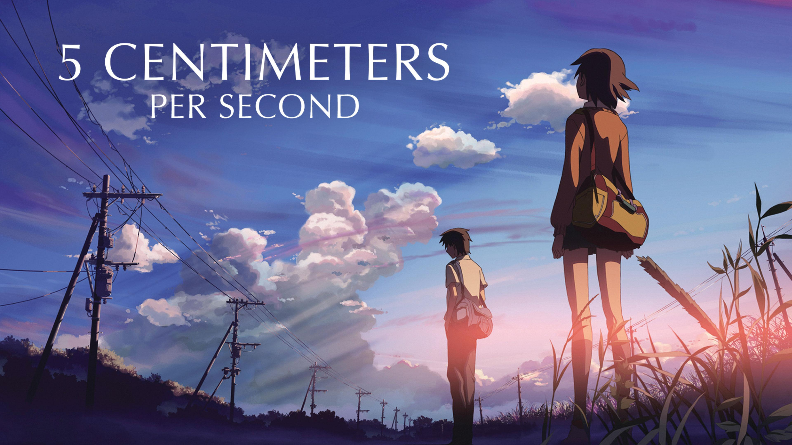
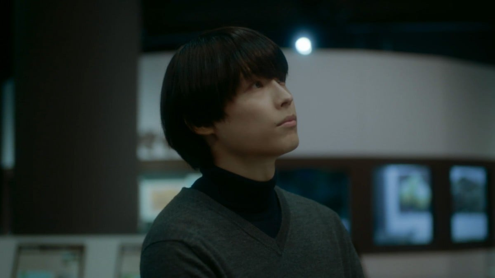
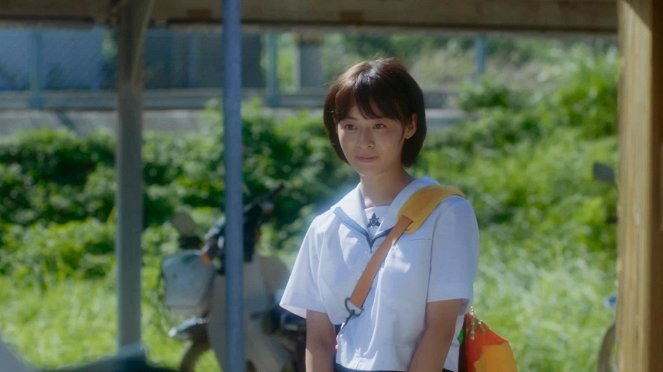

5 Centimeters Per Second
"Kecepatan jatuhnya kelopak bunga sakura..."

Tokoh Utama


Takaki Toono
Cast Live Action:Hokuto Matsumura
Karakter utama yang terjebak dalam kenangan masa lalu dan sulit untuk beranjak maju seiring berjalannya waktu.

Akari Shinohara
Cast Live Action:Mitsuki Takahata
Cinta pertama Takaki yang menjadi alasan di balik surat-surat yang tak pernah terkirim dan kerinduan yang mendalam.

Kanae Sumida
Cast Live Action:Mori Nana
Gadis yang mencintai Takaki di masa SMA, namun ia menyadari bahwa hati Takaki selalu tertuju pada sesuatu yang jauh di luar jangkauannya.
Alur Cerita
Anime
Nanti nyusul
Live Action
Rewatch live action dulu
Tambahan (Catatan Perjalanan)
Pada hari Minggu,1 Maret 2026, saya mengunjungi Ebisu Cafe yang berlokasi di Grand Indonesia, Jakarta Pusat.Kafe ini berkolaborasi dengan Milou Farm House yang menyajikan masakan Japanese fusion.Saya memutuskan pergi kesana karena penasaran dengan kafe bertema Japanese Fusion tersebut dan sekalian menghabiskan waktu untuk menunggu waktu berbuka puasa(Sekalian mencoba hal mahal disana juga sihh).Saya datang kesana sendirian dengan menaiki Transjakarta dari Ragunan menuju Tosari yang bersampingan dengan Grand Indonesia tersebut.Tapi sebelum saya menuju kafenya, saya mengunjungi toko Blibli Store yang menjual HP, seperti Samsung, Iphone, Vivo, Huawei, Dan lain-lain.dan ketika waktu berbuka tiba, saya langsung mengunjungi kafe tersebut.Pertama kali masuk ke sana, disana sudah ramai dengan orang-orang yang menggemari karya dari Makoto Shinkai, seperti 5 Centimeters Persecond dan Your Name dan banyak foto-foto dan hiasan-hiasan dari kedua film tersebut.saya memesan beberapa menu disana mulai dari Sakura Peach Sorbet Tea, yaitu minuman soda bertema pohon Sakura dan Akari Heartfelt Bento, yaitu makanan yang berisi nasi,daging,sayur yang dikemas rapi(Makanan ini sama seperti yang ada di film 5 Centimeters Persecond itu sendiri).lalu saat pesanannya sudah tiba, saya mencicipinya dan ternyata rasanya benar-benar enak dan sesuai dengan yang ada di film.lalu selesai makan saya lanjut membayar dan ternyata harga yang harus saya bayar adalah RP.226.000.memang agak mahal tapi dengan tempat,suasana dan rasa makanannya sangat sesuai.Dan ketika pulang saya membeli poster dari film 5 Centimeters Persecond dengan harga RP.55.000 dan saya akhirnya pulang dalam perasaan yang puas tapi tidak dengan ending dari filmnya:)